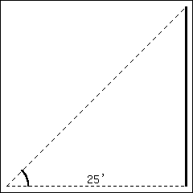
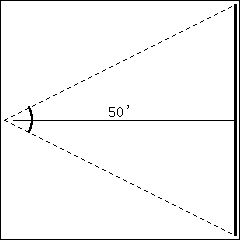

In Section 2.2 we explored the meaning and use of the derivative. This section starts by revisiting some of those ideas.
Recall that the derivative of a function \(f\) can be used to find the slopes of lines tangent to the graph of \(f\text{.}\) At \(x=c\text{,}\) the tangent line to the graph of \(f\) has equation
\begin{equation*}
y = \fp(c)(x-c)+f(c)\text{.}
\end{equation*}
The tangent line can be used to find good approximations of \(f(x)\) for values of \(x\) near \(c\text{.}\)
For instance, we can approximate \(\sin(1.1)\) using the tangent line to the graph of \(f(x)=\sin(x)\) at \(x=\pi/3 \approx 1.05\text{.}\) Recall that \(\sin(\pi/3) = \sqrt{3}/2 \approx 0.866\text{,}\) and \(\fp(\pi/3)=\cos(\pi/3) = 1/2\text{.}\) Thus the tangent line to \(f(x) = \sin(x)\) at \(x=\pi/3\) is:
Figure4.4.1.Graphing \(f(x) = \sin(x)\) and its tangent line at \(x=\pi/3\) in order to estimate \(\sin(1.1)\)
In Figure 4.4.1.(a), we see a graph of \(f(x) = \sin(x)\) graphed along with its tangent line at \(x=\pi/3\text{.}\) The small rectangle shows the region that is displayed in Figure 4.4.1.(b). In this figure, we see how we are approximating \(\sin(1.1)\) with the tangent line, evaluated at \(1.1\text{.}\) Together, the two figures show how close these values are.
Using this line to approximate \(\sin(1.1)\text{,}\) we have:
(We leave it to the reader to see how good of an approximation this is.)
We now generalize this concept. Given \(f(x)\) and an \(x\)-value \(c\text{,}\) the tangent line is \(y=\ell(x)\text{,}\) where \(\ell(x) = \fp(c)(x-c)+f(c)\text{.}\) Clearly, \(f(c) = \ell(c)\text{.}\) Let \(\dx\) be a small number, representing a small change in the \(x\)-value. We assert that:
since the tangent line to a function approximates well the values of that function near \(x=c\text{.}\) This tangent line approximation is used frequently enough in applications that we give it a name.
Definition4.4.2.
The function \(\ell(x)\) is often referred to as the linearization, or linear approximation of \(f\) at \(c\text{.}\) It is the linear function that best approximates the value of \(f(x)\) when \(x\) is close to \(c\text{.}\)
As the \(x\)-value changes from \(c\) to \(c+\dx\text{,}\) the \(y\)-value of \(f\) changes from \(f(c)\) to \(f(c+\dx)\text{.}\) We call this change of \(y\)-value \(\dy\text{.}\) That is:
This final equation is important; it becomes the basis of Definition 4.4.3 and Key Idea 4.4.4. In short, it says that when the \(x\)-value changes from \(c\) to \(c+\Delta x\text{,}\) the \(y\) value of a function \(f\) changes by about \(\fp(c)\Delta x\text{.}\)
We introduce two new variables, \(dx\) and \(dy\) in the context of a formal definition.
Definition4.4.3.Differentials of \(x\) and \(y\).
Let \(y=f(x)\) be differentiable. The differential of \(x\text{,}\) denoted \(dx\text{,}\) is any nonzero real number (usually taken to be a small number). The differential of \(y\text{,}\) denoted \(dy\text{,}\) is
\begin{equation*}
dy = \fp(x)dx\text{.}
\end{equation*}
We can solve for \(\fp(x)\) in the above equation: \(\fp(x) = dy/dx\text{.}\) This states that the derivative of \(f\) with respect to \(x\) is the differential of \(y\) divided by the differential of \(x\text{;}\) this is not the alternate notation for the derivative, \(\lz{y}{x}\text{.}\) This latter notation was chosen because of the fraction-like qualities of the derivative, but again, it is one symbol and not a fraction.
It is helpful to organize our new concepts and notations in one place.
Key Idea4.4.4.Differential Notation.
Let \(y = f(x)\) be a differentiable function.
Let \(\dx\) represent a small, nonzero change in \(x\) value.
Let \(dx\) represent a small, nonzero change in \(x\) value (i.e., \(\dx = dx\)).
Let \(\dy\) be the change in \(y\) value as \(x\) changes by \(\dx\text{;}\) hence
Let \(dy = \fp(x)dx\) which, by (4.4.1), is an approximation of the change in \(y\)-value as \(x\) changes by \(\dx\text{;}\)\(dy \approx \dy\text{.}\)
What is the value of differentials? Like many mathematical concepts, differentials provide both practical and theoretical benefits. We explore both here.
The \(x\)-value is changing from \(x=3\) to \(x=3.1\text{;}\) therefore, we see that \(dx=0.1\text{.}\) If we know how much the \(y\)-value changes from \(f(3)\) to \(f(3.1)\) (i.e., if we know \(\dy\)), we will know exactly what \(f(3.1)\) is (since we already know \(f(3)\)). We can approximate \(\dy\) with \(dy\text{.}\)
We expect the \(y\)-value to change by about \(0.6\text{,}\) so we approximate \(f(3.1) \approx 9.6\text{.}\)
We leave it to the reader to verify this, but the preceding discussion links the differential to the tangent line of \(f(x)\) at \(x=3\text{.}\) One can verify that the tangent line, evaluated at \(x=3.1\text{,}\) also gives \(y=9.6\text{.}\)
Of course, it is easy to compute the actual answer (by hand or with a calculator): \(3.1^2 = 9.61\text{.}\) (Before we get too cynical and say “Then why bother?”, note our approximation is really good!)
So why bother?
In “most” real life situations, we do not know the function that describes a particular behavior. Instead, we can only take measurements of how things change — measurements of the derivative.
Imagine water flowing down a winding channel. It is easy to measure the speed and direction (i.e., the velocity) of water at any location. It is very hard to create a function that describes the overall flow, hence it is hard to predict where a floating object placed at the beginning of the channel will end up. However, we can approximate the path of an object using differentials. Over small intervals, the path taken by a floating object is essentially linear. Differentials allow us to approximate the true path by piecing together lots of short, linear paths. This technique is called Euler's Method, studied in introductory Differential Equations courses.
We use differentials once more to approximate the value of a function. Even though calculators are very accessible, it is neat to see how these techniques can sometimes be used to easily compute something that looks rather hard.
Example4.4.6.Using differentials to approximate a function value.
We expect \(\sqrt{4.5} \approx 2\text{,}\) yet we can do better. Let \(f(x) = \sqrt{x}\text{,}\) and let \(c=4\text{.}\) Thus \(f(4) = 2\text{.}\) We can compute \(\fp(x) = 1/(2\sqrt{x})\text{,}\) so \(\fp(4) = 1/4\text{.}\)
We approximate the difference between \(f(4.5)\) and \(f(4)\) using differentials, with \(dx = 0.5\text{:}\)
The approximate change in \(f\) from \(x=4\) to \(x=4.5\) is \(0.125\text{,}\) so we approximate \(\sqrt{4.5} \approx 2.125\text{.}\)
Differentials are important when we discuss integration. When we study that topic, we will use notation such as
\begin{equation*}
\int f(x)\,dx
\end{equation*}
quite often. While we don't discuss here what all of that notation means, note the existence of the differential \(dx\text{.}\) Proper handling of integrals comes with proper handling of differentials.
In light of that, we practice finding differentials in general.
Example4.4.7.Finding differentials.
In each of the following, find the differential \(dy\text{.}\)
\(y = \sin(x)\text{:}\) As \(f(x) = \sin(x)\text{,}\)\(\fp(x) = \cos(x)\text{.}\) Thus
\begin{equation*}
dy = \cos(x)dx\text{.}
\end{equation*}
\(y = e^x\left(x^2+2\right)\text{:}\) Let \(f(x) = e^x\left(x^2+2\right)\text{.}\) We need \(\fp(x)\text{,}\) requiring the Theorem 2.4.1.
We have \(\fp(x) = e^x\left(x^2+2\right) + 2xe^x\text{,}\) so
\begin{equation*}
dy = \left(e^x\left(x^2+2\right) + 2xe^x\right)dx\text{.}
\end{equation*}
\(y = \sqrt{x^2+3x-1}\text{:}\) Let \(f(x) = \sqrt{x^2+3x-1}\text{;}\) we need \(\fp(x)\text{,}\) requiring the Theorem 2.5.3.
We have \(\fp(x) = \frac{1}{2}\left(x^2+3x-1\right)^{-\frac{1}{2}}(2x+3) = \frac{2x+3}{2\sqrt{x^2+3x-1}}\text{.}\) Thus
\begin{equation*}
dy = \frac{(2x+3)dx}{2\sqrt{x^2+3x-1}}\text{.}
\end{equation*}
Finding the differential \(dy\) of \(y=f(x)\) is really no harder than finding the derivative of \(f\text{;}\) we just multiply\(\fp(x)\) by \(dx\text{.}\) It is important to remember that we are not simply adding the symbol “\(dx\)” at the end.
We have seen a practical use of differentials as they offer a good method of making certain approximations. Another use is error propagation. Suppose a length is measured to be \(x\text{,}\) although the actual value is \(x+\dx\) (where \(\dx\) is the error, which we hope is small). This measurement of \(x\) may be used to compute some other value; we can think of this latter value as \(f(x)\) for some function \(f\text{.}\) As the true length is \(x+\dx\text{,}\) one really should have computed \(f(x+\dx)\text{.}\) The difference between \(f(x)\) and \(f(x+\dx)\) is the propagated error.
How close are \(f(x)\) and \(f(x+\dx)\text{?}\) This is a difference in “y” values:
We can approximate the propagated error using differentials.
Example4.4.8.Using differentials to approximate propagated error.
A steel ball bearing is to be manufactured with a diameter of 2 cm. The manufacturing process has a tolerance of \(\pm 0.1\)mm in the diameter. Given that the density of steel is about 7.85 g⁄cm3, estimate the propagated error in the mass of the ball bearing.
The mass of a ball bearing is found using the equation “mass = volume × density.” In this situation the mass function is a product of the radius of the ball bearing, hence it is \(m = 7.85\frac43\pi r^3\text{.}\) The differential of the mass is
Is this error significant? It certainly depends on the application, but we can get an idea by computing the relative error. The ratio between amount of error to the total mass is
We leave it to the reader to confirm this, but if the diameter of the ball was supposed to be 10 cm, the same manufacturing tolerance would give a propagated error in mass of \(\pm12.33\)g, which corresponds to a percent error of \(\pm0.188\%\text{.}\) While the amount of error is much greater (\(12.33 \gt 0.493\)), the percent error is much lower.
ExercisesExercises
Terms and Concepts
1.
True
False
Given a differentiable function \(y=f(x)\text{,}\) we are generally free to choose a value for \(dx\text{,}\) which then determines the value of \(dy\text{.}\)
2.
True
False
The symbols “\(dx\)” and “\(\dx\)” represent the same concept.
3.
True
False
The symbols “\(dy\)” and “\(\dy\)” represent the same concept.
4.
True
False
Differentials are important in the study of integration.
5.
How are differentials and tangent lines related?
6.
True
False
In real life, differentials are used to approximate function values when the function itself is not known.
Problems
Exercise Group.
Use differentials to approximate the given value by hand.
A set of plastic spheres are to be made with a diameter of \({1\ {\rm cm}}\text{.}\) If the manufacturing process is accurate to \({1\ {\rm mm}}\text{,}\) what is the propagated error in volume of the spheres?
32.
The distance, in feet, a stone drops in \(t\) seconds is given by \(d(t) = 16t^2\text{.}\) The depth of a hole is to be approximated by dropping a rock and listening for it to hit the bottom. What is the propagated error if the time measurement is accurate to \(2/10\) of a second and the measured time is:
\(2\) seconds?
\(5\) seconds?
33.
What is the propagated error in the measurement of the cross sectional area of a circular log if the diameter is measured at \(15''\text{,}\) accurate to \(1/16''\text{?}\)
34.
A wall is to be painted that is \(9'\) high and is measured to be \(15',\,1''\) long. Find the propagated error in the measurement of the wall’s surface area if the measurement is accurate to \(1/-2''\text{.}\)
Exercise Group.
The following exercises explore some issues related to surveying in which distances are approximated using other measured distances and measured angles. (Hint: Convert all angles to radians before computing.)
35.
The length \(L\) of a long wall is to be approximated. The angle \(\theta\text{,}\) as shown in the diagram (not to scale), is measured to be \(85.2^\circ\text{,}\) accurate to \(1^\circ\text{.}\) Assume that the triangle formed is a right triangle.

What is the measured length \(L\) of the wall?
What is the propagated error?
What is the percent error?
36.
The length \(L\) of a long wall is to be approximated. The angle \(\theta\text{,}\) as shown in the diagram (not to scale), is measured to be \(71.5^\circ\text{,}\) accurate to \(1^\circ\text{.}\) Assume that the triangle formed is a right triangle.
What is the measured length \(L\) of the wall?
What is the propagated error?
What is the percent error?
37.
The length \(L\) of a long wall is to be calculated by measuring the angle \(\theta\) shown in the diagram (not to scale). Assume the formed triangle is an isosceles triangle. The measured angle is \(143^\circ\text{,}\) accurate to \(1^\circ\text{.}\)

What is the measured length \(L\) of the wall?
What is the propagated error?
What is the percent error?
38.
The length of the walls in Exercise 4.4.35–4.4.37 are essentially the same. Which setup gives the most accurate result?
Right triangle at 25 feet
Right triangle at 100 feet
Isosceles triangle at 50 feet
39.
Consider the setup in Exercise 4.4.37. This time, assume the angle measurement of \(143^\circ\) is exact but the measured \(50'\) from the wall is accurate to \(6''\text{.}\)